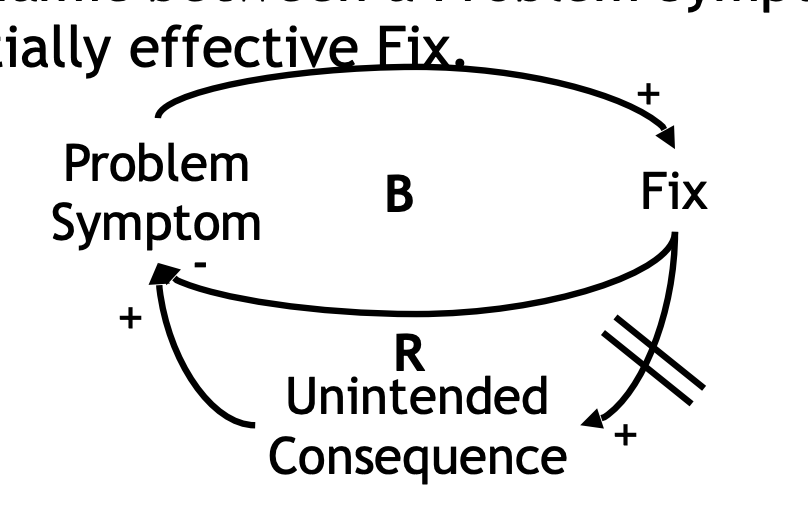
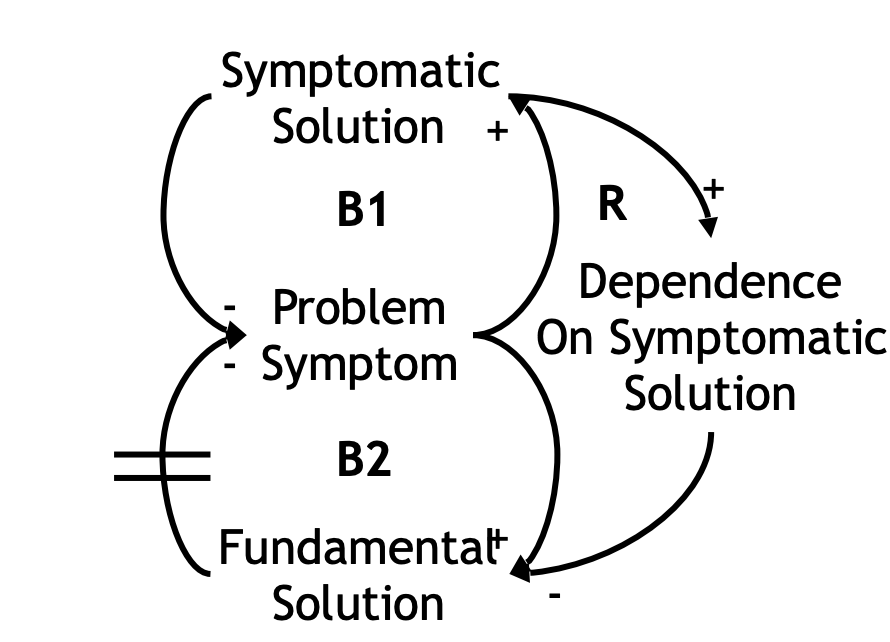
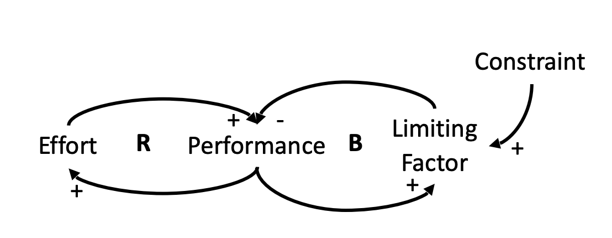
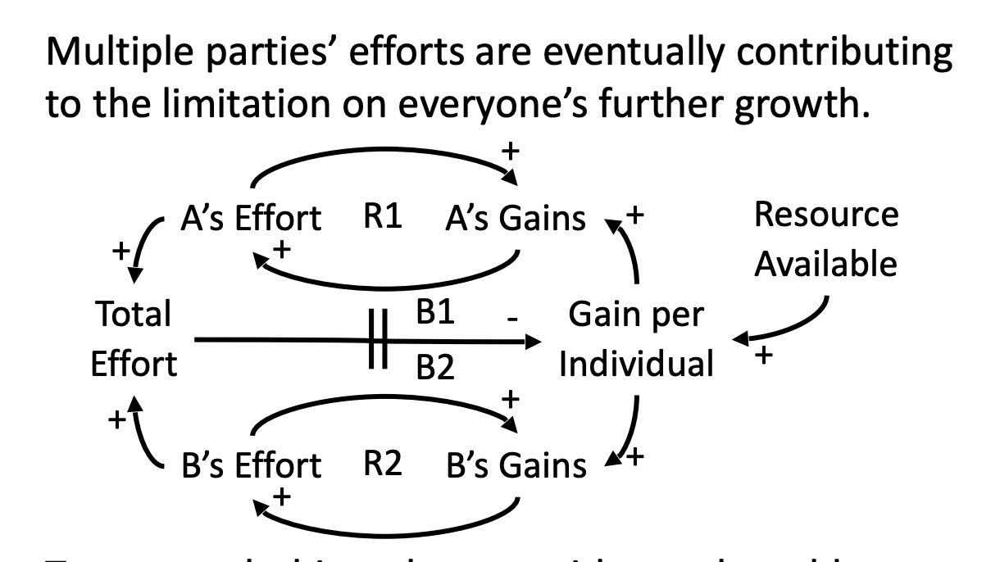
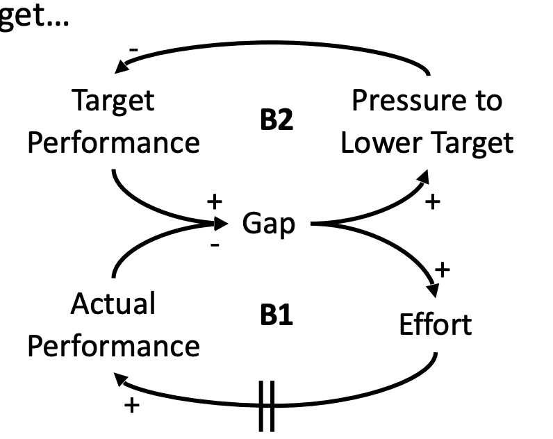
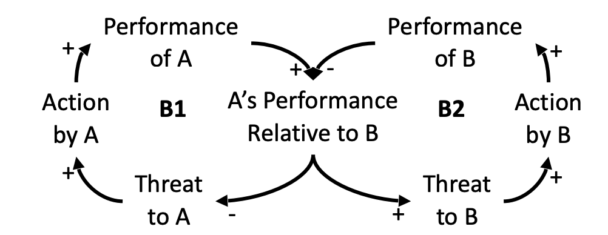
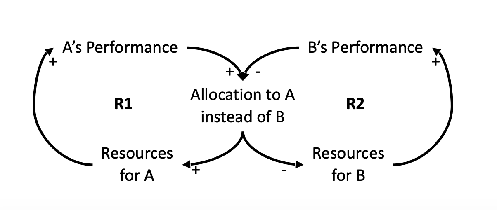

System Definition
Definition: “A group of interacting, interrelated, or interdependent parts that form a complex and unified whole that has a specific purpose.”
Systems Thinking and System Dynamics
- Systems Thinking and System Dynamics is about understanding how “Systems” behave.
- We construct models to:
- describe the behaviour of systems,
- Simulate outcomes of such combined behaviour over time to support decision-making.
Such decisions are for problem solving and improvements of systems.
CLD (causal loop diagram)
Deciding the dynamic of the loop (R/B)
Two ways to decide the dynamic:
Go through the loop at least twice and see if the variables are always going in the same direction, loop after loop.
When Sheep Population is large, more Wolf Attacks happened. This results in more Real Cries, which causes more Villagers’ Rescue. Less Sheep will be killed, thus the Sheep Population can keep on prospering. This leads to even more Wolf Attacks, more Real Cries… Looks like all variables are being reinforced.Count the number of negative polarities (-). With 2 -‘s in this loop (an even number), they cancel each other out, which makes this loop a Reinforcing loop.
System Archetypes
Fixes that fail

- This archetype features a common phenomenon, where an effective solution to a problem started to worsen the problem situation, due to an unintended consequence (side-effect).
- Featuring two loops: the balancing dynamic between symptom and an initially effective fix; a reinforcing loop between the quick fix, an unintended consequence, and the symptom.
Shifting the burden

R shows that as the S. Solution is applied, the F. Solution is less preferred.
- This archetype features another common phenomenon, where multiple solutions can be used to address a problem symptom.
- One such solution is Symptomatic (Quick Fix), while the other is Fundamental
- While the Fundamental Solution is “better” because it is sustainable…
- the Symptomatic Solution is “better” because it is quick and easy.
- Once the Symptomatic Solution has been applied, the Fundamental Solution becomes less appealing.
Limits to growth

- When decision-makers can achieve certain Performance by exerting Effort, the dynamics will often be reinforcing, thus both Effort and Performance will grow exponentially over time.
- Reinforcing dynamics, however, are not commonly sustainable.
- Eventually, further Performance may be limited by natural Constraints, thus rendering the Effort less effective, or useless.
Tragedy of the commons

- This archetype can be referred to as the “macro” version of “Limits to Growth”.
- Multiple parties’ efforts are eventually contributing to the limitation on everyone’s further growth
Drifting goals
This scenario involves a person with a target to achieve. Over time, this person is pressured into adjusting their target to make it easier to achieve.

This is comparable to “Shifting the Burden”. Instead of a quick fix, an adjustment in the Target is made.
Escalation

For each party, their improvement actions are balancing dynamics.
Collaboratively, they form a reinforcing dynamic that escalates as they compete
As we have learnt, reinforcing dynamics are not usually sustainable. Eventually, a natural limitation will be reached.
Success to the Successful

- The more successful party is favoured with more rewards/resources, while the other is doomed to further failure.
- This archetype features 2 reinforcing loops, which in combination, becomes a large reinforcing loop.